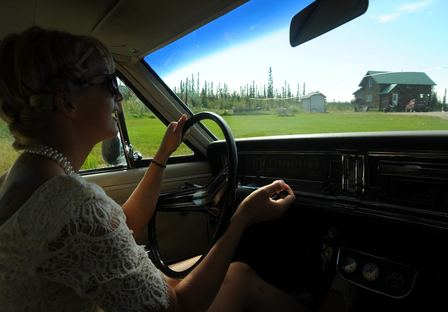

Terapia facial
Rutina guiada para sonreír, levantar las cejas y cerrar los ojos, cinco veces cada uno, midiendo la simetría de cada lado.
Terapia facial guiada y detección de fatiga al volante con la cámara de tu dispositivo
Comenzar ahoraGestos que EmoLang detecta en tiempo real con MediaPipe y traduce a autómatas finitos
EmoLang es un lenguaje de programación hecho para describir gestos del rostro. Cada ejercicio y cada señal de fatiga se escriben como un programa, y el compilador los convierte en autómatas finitos que revisan la cámara cuadro por cuadro.
Cada ejercicio se mide contra el esfuerzo máximo de cada persona: si una sonrisa ligera es lo más que alguien puede hacer hoy, cuenta. Una voz guía la rutina y espera a que termines cada indicación.
La cámara se procesa dentro de tu navegador. El video nunca se graba ni se envía: solo se guardan los números de tus sesiones, y puedes borrarlos cuando quieras.
Comenzar ahoraDos módulos sobre el mismo compilador: uno para rehabilitar y otro para prevenir.
Rutina guiada para sonreír, levantar las cejas y cerrar los ojos, cinco veces cada uno, midiendo la simetría de cada lado.

Detecta microsueños, bostezos, cabeceos y distracciones mientras manejas, y suena una alarma a tiempo.
Funciona en celular, tablet o computadora desde el navegador, sin instalar nada.
Tres pasos, con la cámara que ya tienes.
Mira al frente y no te muevas: EmoLang aprende cómo es tu rostro en reposo.
Haz cada ejercicio cuando la voz termine la indicación; el contador avanza solo.
Al terminar ves tus repeticiones y tu simetría, y cada sesión queda guardada en tu cuenta.